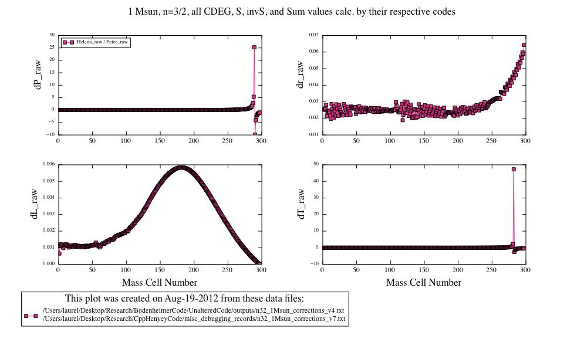
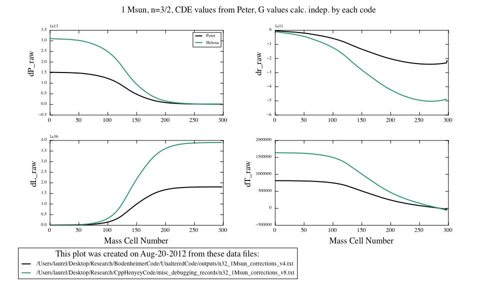
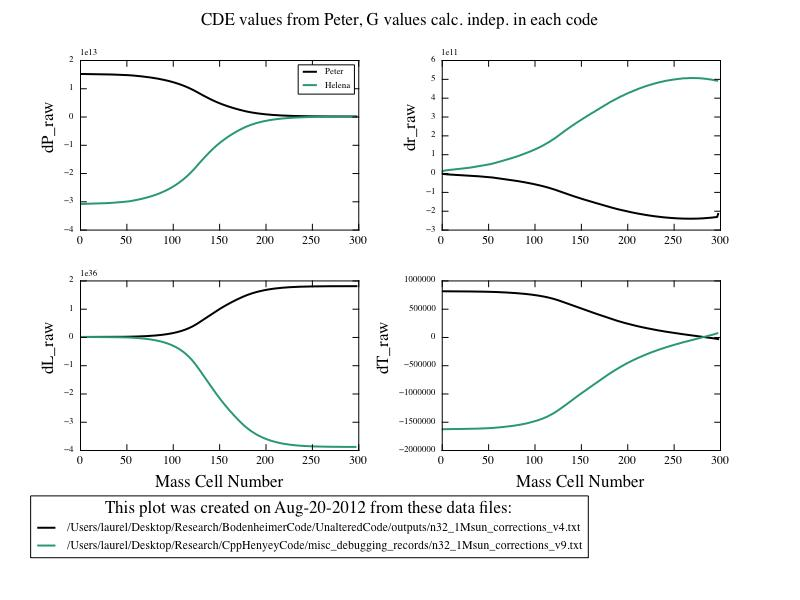

Date & Time: Aug. 20, 2012
Location: campus
Computing context: MachoMac
(/Desktop/Research/CppHenyeyCode/src, /Desktop/Research/BodenheimerCode/UnalteredCode)
From last time:
Hints from Greg: Numerical recipes, ill-conditioned matrices (NR apparently has info on how to finess those), "pre-conditioning" a matrix, singular value decomposition?? (may only be worth it for matrices larger than 4x4, but worth keeping in mind)
Notice that the dX values calculated by the two codes still differ substantially in places (see Figure 1). Need to figure out what's causing that to happen.
Fixed this by modifying my python script to always sort the data by mass cell number in increasing order before plotting any comparisons. The dX values now agree between the two codes, provided they both use the same CDEG values.
Let Helena calculate its own CDEG values, in addition to the Sum, S, and S^-1 matrix values. (Keep the primary and lookup var values set to those determined by Peter's code, though.)
Results saved in: /misc_debugging_records/n32_1Msun_corrections_v7.txt
Outcome: They disagree. See Figure 1 for details.

Figure
1
So, it looks like the limiting factor in getting the codes dX values to agree lies NOT with the S matrices or their inversions, but with the CDEG values that Helena is calculating.
To Do Today:
Try to isolate which, if any, of the CDEG matrices are most responsible for the dX value differences between the Peter and Helena. (For the 1Msun, n=3/2 polytrope model).
Need to compare the signs of E values generated from each code...
The CDE matrix values have opposite signs. The G matrix values have the same sign.
Use Peter-generated
values for all but one, and see how that effects the dX values'
agreement b/w codes.
Results:
CDE values from Peter,
G values calculated independently by each code:
Actually, I made a mistake. The CDE values were
calculated independently in each code, but the G values were the
ones calculated by Peter's code in both cases.
Outputs saved in: /misc_debugging_records/n32_1Msun_corrections_v8.txt
Results: dX profiles seem to have the same overall shape, but Helena's values are consistently larger that Peter's. See Figure 2 for results.

Raw dX values calculated from Peter's code vs. Helena,
with independently calculated CDE , S, inverse S, and Sum matrix
values. G values from Peter's code were read into Helena. It looks
like the Helena dX values are always about a factor of two larger
than the Peter dX values, here.
Figure
2:
CDE values from Peter, G values calculated independently in each code:
Outputs saved in: /misc_debugging_records/n32_1Msun_corrections_v9.txt
Results: The dX profile shapes appear similar, though Helena's dX values appear to always be ~2x larger than Peter's. Also, the dX values have opposite signs. See Figure 3 for details.

1 Msun, n=3/2 input model. CDE values the same between
both codes (from Peter's values). G, S, inverseS, and Sum values
calculated independently within each code.
Figure
3:
CDG values from Peter, E values calculated independently
Outputs saved in: /misc_debugging_records/n32_1Msun_corrections_v10.txt
Results: Kind of wonky... See Figure 4 for details.
1Msun, n=3/2 polytrope input model, with CDG matrix
values from Peter's code. E, S, inverseS, and Sum values were
calculated independently in each code.
Figure
4:
CEG values from Peter, D values calculated independently
Outputs saved in: /misc_debugging_records/n32_1Msun_corrections_v11.txt
Results: Now, the Helena dX values are much larger than Peter's dX values. See Figure 5 for more details.
CEG matrix values from Peter's code. D, S, inverseS,
and Sum values calculated independently in each code. 1 Msun, n=3/2
polytrope input model.
Figure
5:
DEG values from Peter, C values calculated independently
Outputs saved in: /misc_debugging_records/n32_1Msun_corrections_v12.txt
Results: Almost perfect agreement (aside from the signs) between the dX values from each code. See Figure 6 for more details.
DEG values from Peter's code. C, S, inverseS, and Sum
values calculated independently in each code. 1 Msun, n=3/2
polytropic input model. Notice the near-perfect agreement (aside
from the signs) of the dX values from both codes, here.
Figure
6:
For comparison, here are the results for when all the CDEG, S, inverseS, and Sum values are calculated independently within each code (Figure 7):
CDEG, S, inverseS, and Sum values calculated
independently within each code.
Figure
7:
Interesting that the C matrix values are the ones that make the least difference on the dX values when calculated independently in both codes. Is this because the C values generated by both codes agree well with each other, or is it more to do with the nature that the C matrices play in the dX calculations?
Check this by comparing the C, D, and E values between the two codes.
What's the best way to compare such a large set of numbers? (Each CDE matrix is 4x4, and there are ~300 mass cells in this particular simulation...)
For the 1 Mjup model: do the Peter and Helena models' dX values (raw) now agree, too?
To keep in mind for later:
Look at the comparison between Peter's and Helena's S^-1 values.
Find the mass cell numbers where the differences are largest
Print out Helena's (and Peter's?) S matrices at those locations
See what the dynamic range of values in those matrices is/are (figure out if that's what's causing the differences between the two codes' results)
If the difference is due to the ill-conditioned-ness of the S matrices, go on the the step below.
Test both Helena's matrix inversion algorithms (MIAs) on matrices with varying dynamic ranges, to see where they start to break down.
See if Peter's [S | x] --> [S | S^-1 * x] method (which I'm 80% but not 100% sure is what that GIRL subroutine of his is doing) truly is more numerically stable with these ill-conditioned-ish matrices.
If so, implement it in my code. Or perhaps, test its robustness by implementing it in my code and seeing if that'll make Helena and Peter's code produce the same correction values.